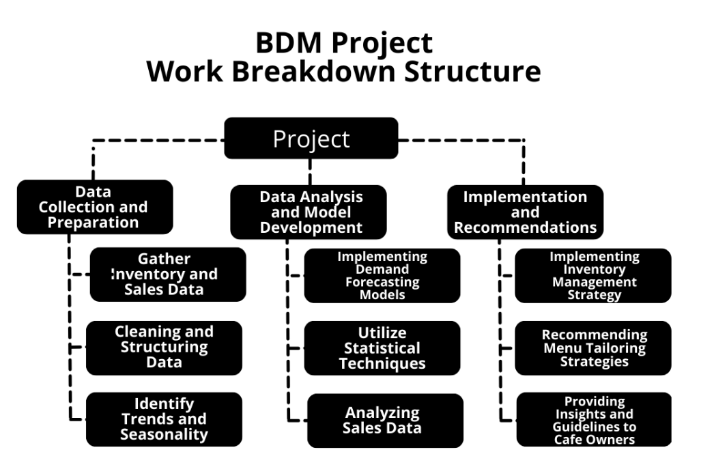
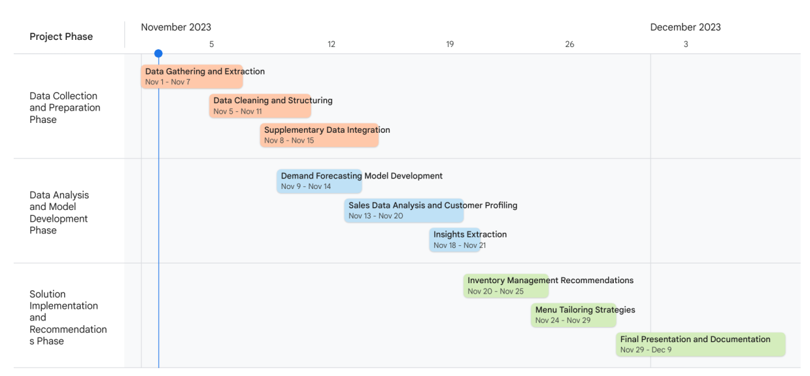

Data-Driven Transformation: Optimizing Operations and Customer Engagement at XYZ Café
PDF: Proposal.pdf
Executive Summary
XYZ Café, located in [City], [State], is a local North Indian cuisine café operating within the [Shopping Complex]. Established in January 2022, this café, owned by [Owner Name 1] and [Owner Name 2], primarily serves the local community while also targeting visitors to the complex and nearby businesses. Additionally, they have expanded their reach by partnering with Swiggy for online food delivery.
The main challenge facing XYZ Café is the need to minimize inventory losses and establish a unique market position in the highly competitive food industry. This project aims to address these issues by optimizing inventory management and developing a distinct brand identity. Currently, the café operates without a structured approach to these challenges, leading to inefficiencies and potential revenue loss.
The proposed solution involves the implementation of a data-driven approach to inventory management, utilizing AI and Machine Learning techniques. This will ensure efficient demand forecasting, reduced wastage, and enhanced profitability. Furthermore, a unique branding strategy will be crafted to differentiate XYZ Café in the market.
This proposal outlines a comprehensive strategy to optimize operations, increase efficiency, and elevate the café’s position in the competitive market. The successful execution of these initiatives is expected to yield significant improvements in inventory management and revenue generation.
Organization Background
XYZ Café, situated in [City], [State], is a North Indian cuisine café nestled within the [Shopping Complex]. Owned by [Owner Name 1] and [Owner Name 2], this establishment commenced its operations in the year 2022. Remarkably, the café is efficiently managed by just one cook, supported by the owners in various roles. The cook, whose monthly salary stands at approximately [Salary], is not only remunerated but also provided with housing and food by the proprietors. The establishment’s overall monthly revenue is around [Revenue], whereas operational expenses approximate to around [Expenses]. This economic balance at times leads to a hand-to-mouth financial situation.
XYZ Café offers a diverse menu, including [Menu Items], catering to the varied tastes of its customers. This brief overview of the café’s background highlights its modest yet vital presence in the local culinary landscape.
Problem Statement
The primary challenge at XYZ Café is twofold:
Maximizing Profits: The first objective is to increase profitability through accurate demand forecasting for menu items, reducing unnecessary inventory losses, and optimizing resource allocation.
Customer Culinary Demographic Identification: The second objective entails identifying and understanding the café’s customer culinary demographic by analyzing trends in dish sales, allowing for tailored marketing strategies and menu enhancements to cater to specific customer preferences.
Problem Background
The challenges faced by XYZ Café can be attributed to the recent establishment of the cafe in early 2022. The owners, [Owner Name 1] and [Owner Name 2], who are relatively new to the food business, are currently navigating through a learning curve. This lack of extensive experience in the culinary industry has presented operational challenges and financial hurdles.
Given the café’s nascent establishment, a comprehensive understanding of demand dynamics and optimal inventory management has not been established. Consequently, the cafe faces difficulties in maintaining an effective supply chain, leading to undesirable losses in inventory. The absence of insights through historical data further hampers informed decision-making.
Furthermore, the cafe’s limited experience in the culinary domain has certain implications for understanding its customer demographic. An evolving grasp of customer preferences, habits, and culinary trends presents challenges in aligning offerings with the local consumer base’s expectations. This evolving understanding is reflected in the current product lineup, which may benefit from further refinement to better cater to the changing tastes and preferences of the clientele.
To address these challenges effectively, it is imperative to develop data-driven solutions that encompass demand forecasting, inventory optimization, and an in-depth analysis of customer culinary demographics. These measures will not only enhance operational efficiency but also enable XYZ Café to establish a more profound and sustainable presence in the competitive culinary landscape.
Problem-Solving Approach
Details About The Methods Used With Justification
To address the challenges faced by XYZ Café, a two-pronged problem-solving approach is proposed. Firstly, leveraging the provided one-year inventory and sales data, a data-centric methodology will be employed to develop a robust demand estimation model for each menu item. This involves utilizing techniques such as time series analysis, regression modeling, and machine learning algorithms. By examining historical sales and inventory data, the model can provide accurate forecasts, thereby optimizing inventory management and minimizing losses.
Secondly, to identify customer culinary preferences and demographics, data analysis will be performed to discern trends in dish sales. This entails applying segmentation and clustering methods to group customers based on their preferences. Machine learning techniques, such as k-means clustering or association rule mining, can be instrumental in this analysis. Understanding which dishes resonate with specific customer segments allows the café to tailor its offerings effectively and create targeted marketing strategies.
These approaches are data-driven, ensuring precision and relevance in decision-making, and are instrumental in addressing the café’s challenges. They empower XYZ Café to operate efficiently, increase profitability, and cater to its diverse customer base.
Details About the Intended Data Collection With Justification
The primary data source for this problem-solving approach is the one-year sales and inventory data provided by the owner. This dataset encompasses crucial information, including historical sales records, menu item specifics, and inventory levels. These data points serve as the foundation for our analysis and modeling.
To extract meaningful insights, data cleaning and preprocessing techniques will be applied. This includes handling missing values, outliers, and ensuring data consistency. Subsequently, exploratory data analysis will be conducted to gain a comprehensive understanding of the data’s distribution and patterns.
The chosen analytical methods will rely exclusively on the provided dataset, as recommended by the owner, ensuring that the solutions are derived from the most relevant and practical information available. By utilizing this comprehensive dataset, we aim to develop effective demand estimation models and customer segmentation strategies, optimizing the café’s operations and enhancing its market positioning.
Details About Analysis Tools With Justification
The analysis tools for this project include spreadsheets for initial data exploration and organization. Python, along with libraries like Scikit-learn for machine learning, NumPy for numerical computations, and Matplotlib for data visualization, will be employed for in-depth analysis. Python’s versatility and extensive libraries make it ideal for robust data analysis, while spreadsheets offer a user-friendly interface for initial data inspection.
Expected Timeline


Expected Outcome
The expected outcome of this project is to significantly enhance the operational efficiency and profitability of XYZ Café. This includes the development of accurate demand forecasting models, reducing inventory losses, and identifying specific customer culinary demographics. The ultimate goal is to establish a robust and data-driven foundation for the café’s sustainable growth, offering a more tailored menu and attracting a diverse customer base.